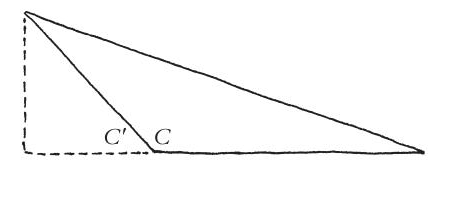
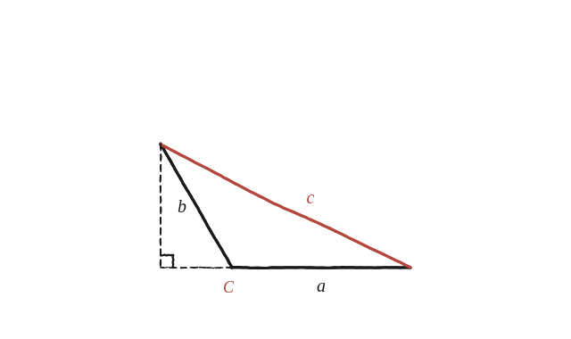

Demostra que, en aquest cas, obtenim c² = a² + b² + 2ab cos C'.

Pitàgores només val per a 90°
El teorema de Pitàgores, tal com se sol veure, només parla d'un triangle rectangle. Aquí l'angle entre a i b no és de 90°, sinó obtús (més gran de 90°) —cal una fórmula que funcioni en aquest cas, i que inclogui Pitàgores com un cas particular quan l'angle sigui recte.
Una altura que cau fora
Traçant l'altura des del vèrtex oposat a c fins a la recta que conté el costat a, aquesta altura no cau dins del triangle —hi cau fora, més enllà d'un dels extrems, perquè l'angle al costat on cauria és obtús (tal com es veu a la imatge de l'enunciat, a dalt). Aquesta altura crea dos triangles rectangles: un de gran (que inclou tot el triangle original) i un de petit (el tros extra, fora del triangle original).
Les dues peces del triangle petit
Al triangle rectangle petit, la hipotenusa és b i l'angle conegut és C' (el suplementari de C, agut). L'altura val, doncs, h = b·sinC', i el tros extra de base val b·cosC'.

Pitàgores al triangle gran
La base del triangle rectangle gran és a més el tros extra: a+b·cosC'. Aplicant-hi Pitàgores: c² = (a+b·cosC')² + (b·sinC')². Desenvolupant: c² = a² + 2ab·cosC' + b²cos²C' + b²sin²C'. Com que sin²C'+cos²C'=1, els dos últims termes es converteixen en b²: c² = a² + b² + 2ab·cosC'.
c²=a²+b²+2ab·cosC', on C' és l'angle agut suplementari de l'angle obtús C. Surt de traçar una altura que cau fora del triangle (creant un triangle rectangle gran i un de petit) i aplicar Pitàgores al gran. Quan C=90° (i per tant C'=90° també), cosC'=0 i la fórmula es converteix exactament en el Pitàgores clàssic: aquest resultat el conté com a cas particular, no el substitueix.
Comprovació
a=5, b=4, C=120° (C'=60°): c²=25+16+2(5)(4)(0,5)=41+20=61, c=√61≈7,81. Comprovat també per coordenades directes (situant els dos costats amb l'angle de 120° entre ells): la distància entre els extrems surt exactament 7,81.